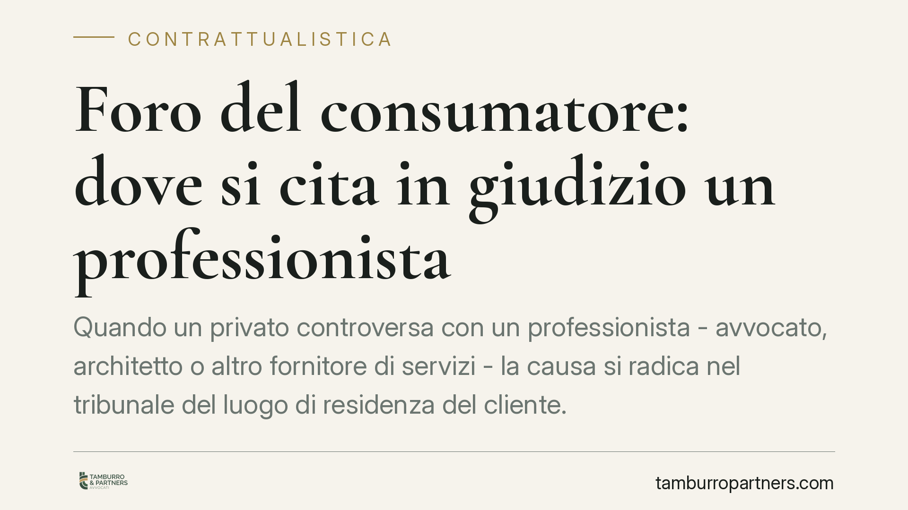

Foro del consumatore: dove si cita in giudizio un professionista
Quando un privato controversa con un professionista - avvocato, architetto o altro fornitore di servizi - la causa si radica nel tribunale del luogo di residenza del cliente. È il cosiddetto foro del consumatore, previsto dal Codice del Consumo per riequilibrare il rapporto tra le parti. Le clausole contrattuali che impongono un tribunale diverso sono presunte vessatorie e quindi nulle.

Il caso e perché conta
Un cliente privato firma un contratto con un professionista. Nel testo compare una clausola che indica un tribunale preciso - spesso quello della sede dello studio o dell'impresa - come unico competente in caso di lite. Poi sorge la controversia. Dove va incardinata la causa?
La risposta, consolidata da tempo in giurisprudenza, è netta: nel foro del consumatore, cioè nel tribunale del luogo dove il cliente ha la residenza o il domicilio. Le clausole che dispongono diversamente sono, di regola, prive di effetto.
Inquadramento normativo
Il riferimento è l'articolo 33 del Codice del Consumo (D.lgs. 206/2005). La norma qualifica come vessatorie le clausole che, malgrado la buona fede, determinano un significativo squilibrio dei diritti e degli obblighi a carico del consumatore.
Al comma 2, lettera u), il legislatore include espressamente tra le clausole che si presumono vessatorie quella che stabilisce come sede del foro competente una località diversa da quella di residenza o domicilio elettivo del consumatore. Si tratta di una presunzione di vessatorietà: spetta al professionista, semmai, dimostrare che la clausola è stata oggetto di trattativa individuale (art. 34, comma 4).
La Cassazione ha chiarito che il foro del consumatore è esclusivo e inderogabile: prevale sugli altri fori previsti dal codice di procedura civile. Non è un foro alternativo ma il foro competente, salvo le eccezioni tassative. La Corte Costituzionale ha a più riprese confermato la legittimità di questo regime di tutela del contraente debole.
Chi è "consumatore" e chi "professionista"
Due nozioni tecniche vanno tenute distinte.
È consumatore la persona fisica che agisce per scopi estranei all'attività imprenditoriale, commerciale, artigianale o professionale eventualmente svolta. Conta la finalità dell'atto, non la qualifica soggettiva: un avvocato che ristruttura casa propria, in quel contratto, è un consumatore.
È professionista chi opera nell'ambito della propria attività. Rientrano nella categoria i liberi professionisti - avvocati, architetti, ingegneri, commercialisti - così come imprese e ditte individuali. La tutela consumeristica scatta quando da un lato c'è un privato e dall'altro un operatore economico.
Implicazioni pratiche
Per il cliente privato il vantaggio è concreto: può agire (o difendersi) davanti al giudice più vicino, senza doversi spostare presso il tribunale scelto unilateralmente dalla controparte. Questo riduce costi e ostacoli all'accesso alla giustizia.
Per il professionista il rovescio è altrettanto chiaro. Inserire nel contratto una clausola di foro diversa da quella del cliente non serve a nulla: il giudice la disapplicherà d'ufficio, anche senza eccezione della parte. Peggio, la clausola può segnalare uno squilibrio complessivo del testo contrattuale.
Attenzione a un errore frequente: la vessatorietà non si sana con la doppia sottoscrizione ai sensi dell'art. 1341 c.c. Quel meccanismo vale nei rapporti tra imprese, non nella disciplina consumeristica, dove serve la prova della trattativa effettiva.
Cosa fare in concreto
- Verificate la qualifica delle parti: prima di redigere o firmare, stabilite se il cliente agisce come consumatore. Da questo dipende l'intero regime applicabile.
- Rimuovete le clausole di foro derogatorie dai contratti destinati a clientela privata: sono inefficaci e indeboliscono il testo.
- Documentate l'eventuale trattativa se una clausola specifica è stata realmente negoziata: senza prova, la presunzione di vessatorietà resta.
- Se siete clienti privati, non date per scontata la competenza indicata nel contratto: consultate un legale prima di rinunciare al vostro foro.
- In fase contenziosa, individuate correttamente il tribunale competente fin dall'atto introduttivo, per evitare eccezioni di incompetenza e allungamento dei tempi.
La disciplina è tecnica e la qualificazione del rapporto non è sempre immediata. Consigliamo una verifica preventiva del contratto, tanto in fase di redazione quanto prima di avviare o subire un'azione giudiziaria.
Disclaimer
Contributo informativo a cura di Tamburro & Partners - Avv. Giuseppe Tamburro. Non costituisce parere legale.
Ogni contratto ha il suo equilibrio.
Se vuoi una revisione delle clausole o una redazione su misura, scrivi allo studio. Ti rispondiamo entro un giorno lavorativo.